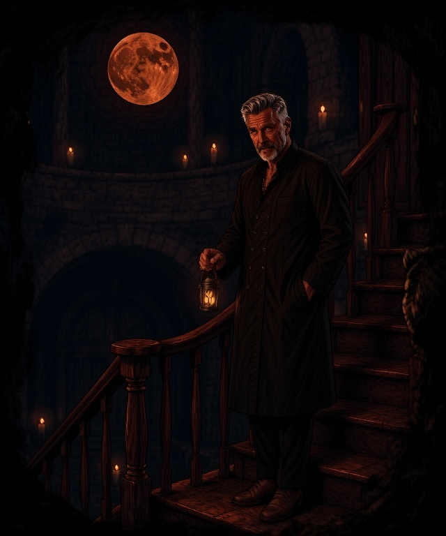
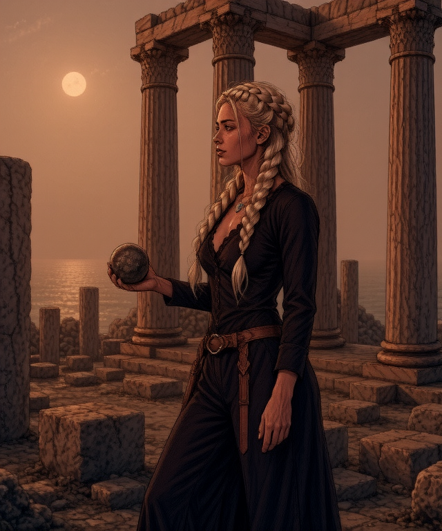
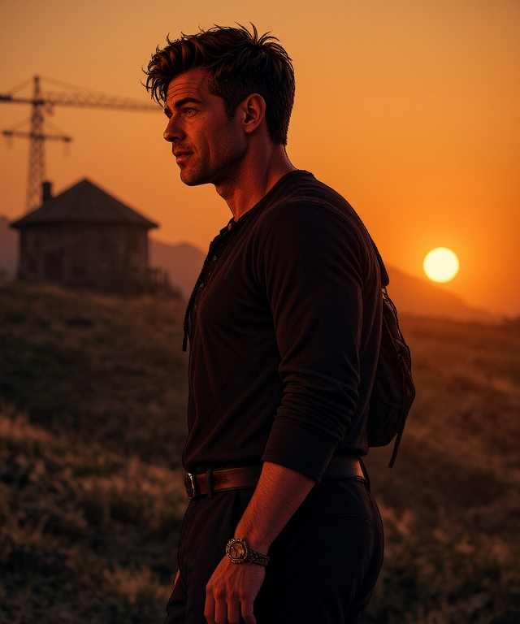
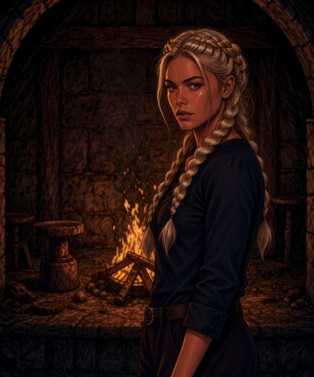
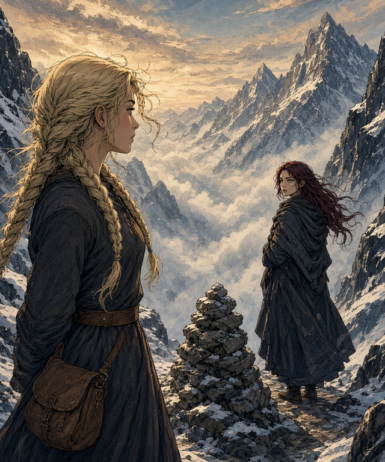
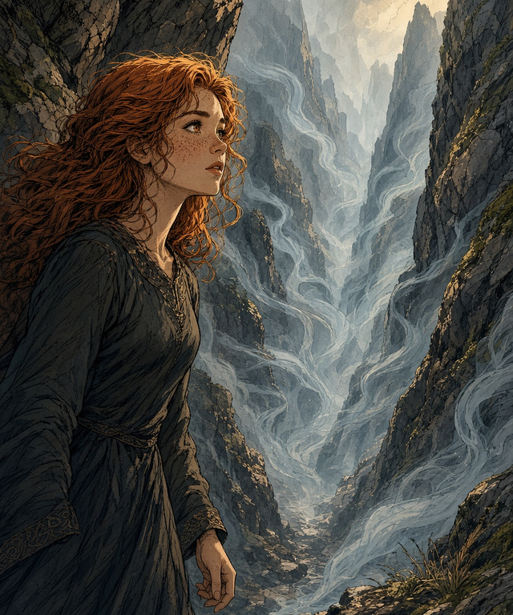
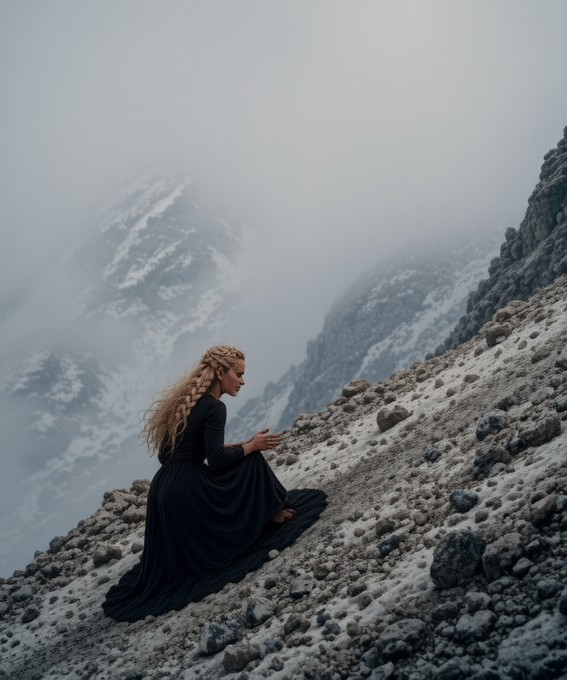
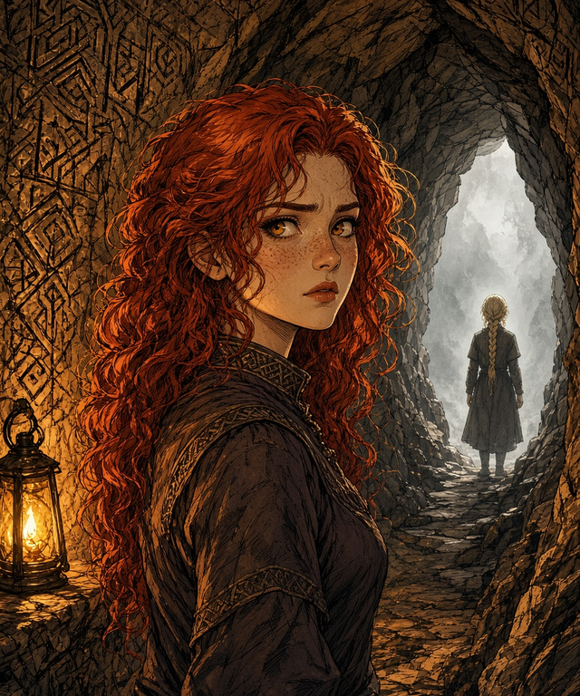
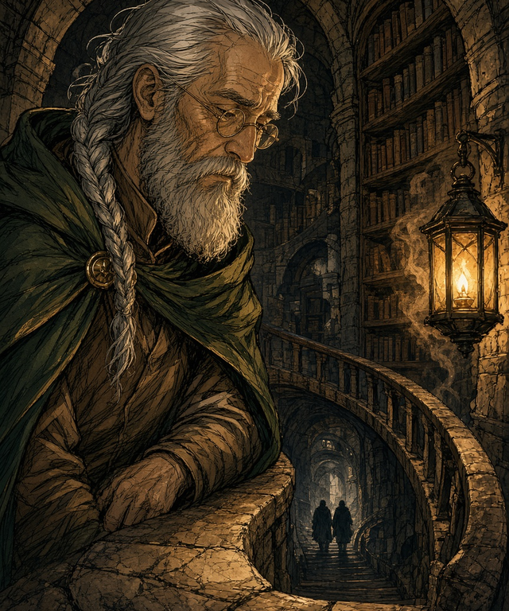
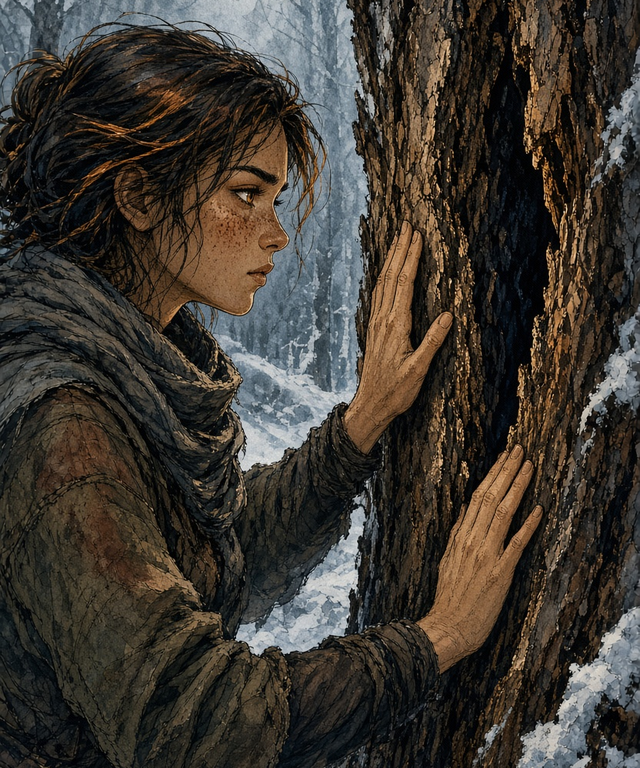

28 von 28 Kapiteln fertig · 298:19 Min. · Stand 28.09.2026 17:51
Folio erzählt. Die wörtliche Rede sprechen Lilli, Maya, Piri und Filli in ihrer eigenen Stimme, Nebenfiguren vorerst Folio.
Wo nicht eindeutig ist, wer spricht, liest Folio. Deutsch. Die englische Lesung folgt.
Prolog – Folio — Der rote Mond 3:29

Wörtliche Rede: Folio 2×
Kapitel 1 – Lilli — Der kalte Stein 11:28

Wörtliche Rede: Folio 9× · Lilli 6×
Kapitel 2 – Maya — Warm in der Tasche 11:56
Wörtliche Rede: Maya 3× · Folio 1×
Kapitel 3 – Filli — Was der Mondstein zeigt 12:25
Wörtliche Rede: Folio 9× · Filli 3×
⚠︎ 1 Stelle(n) mit etwas unsicherer Aussprache
Kapitel 4 – Piri — Genau so viel wie nötig 13:10

Wörtliche Rede: Folio 3× · Piri 2×
Kapitel 5 – Lilli — Das Fjorddorf 11:04

Wörtliche Rede: Folio 8× · Lilli 5×
⚠︎ 1 Stelle(n) mit etwas unsicherer Aussprache
Kapitel 6 – Maya — Das ist kein Zufall 11:40
Wörtliche Rede: Folio 4× · Maya 2×
Kapitel 7 – Lilli — Wer fragt nach mir 11:14

Wörtliche Rede: Folio 15× · Lilli 9×
Kapitel 8 – Maya — Wer bist du, Rothaar? 11:39

Wörtliche Rede: Maya 20× · Folio 17× · Lilli 9×
Kapitel 9 – Lilli — Die, die dich rettet 11:28

Wörtliche Rede: Folio 18× · Lilli 9× · Maya 3×
Kapitel 10 – Maya — Runen im Nebel 11:48

Wörtliche Rede: Maya 14× · Lilli 11× · Folio 4×
⚠︎ 2 Stelle(n) mit etwas unsicherer Aussprache
Zwischenspiel I – Folio — Schritte von unten 3:19

Wörtliche Rede: Folio 4×
Kapitel 11 – Piri — Durch die Schatten 11:38
Wörtliche Rede: Folio 19× · Piri 5×
⚠︎ 2 Stelle(n) mit etwas unsicherer Aussprache
Kapitel 12 – Filli — Der verfluchte Wald 13:11

Wörtliche Rede: Folio 14× · Filli 5×
Kapitel 13 – Piri — Eine Flamme am Weg 11:13
Wörtliche Rede: Piri 1×
Kapitel 14 – Filli — Wer hat das Licht gelassen? 11:49